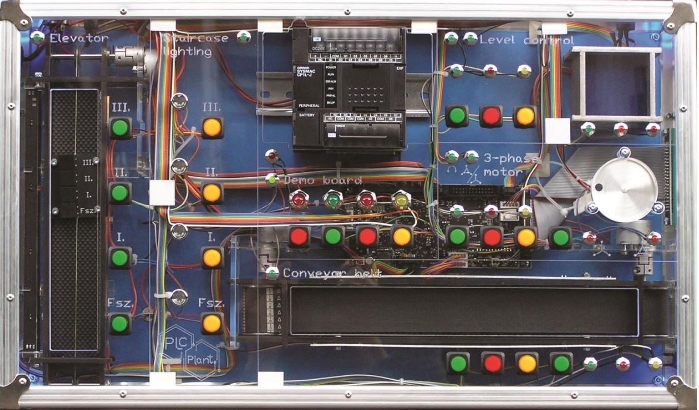

A PLC programozás tantárgyban az ipari automatizálás és a PLC programozás alapjaival ismerkedtem meg. A vezérlési feladatok megvalósításához a CX Programmer szoftvert használtam, ahol megtanultam a létradiagramos programozást. Nagyon érdekes volt látni, ahogy a szoftverben megtervezett logikai hálózatok a valóságban is életre kelnek és irányítanak különböző ipari folyamatokat.
Megismertem a bemenetek és kimenetek szakszerű kiosztását, valamint a stabil és biztonságos működéshez szükséges programozási alapelveket, amiket a gyakorlati órákon is tudtam alkalmazni.
A projektben egy intelligens lépcsőházi világításvezérlést valósítottam meg. Úgy lett felépítve a logika, hogy a világítást bármelyik emeletről el lehessen indítani.
A program alapja egy 20 másodperces automatikus időzítés, de kiegészítettem azzal is, hogy kézzel is bármikor le lehessen kapcsolni. Ez azt jelenti, hogy ha a lámpák már égnek, egy újabb gombnyomással bármikor lekapcsolható a világítás, nem kell megvárni az időzítő lejártát. A fejlesztéshez CX-Programmer szoftvert használtam, a vezérlést pedig létradiagramban készítettem el. Technikai szempontból a megoldást számlálók (CNT) és időzítők (TIM) egymásba fűzésével csináltam meg, amit kifejezetten egy Omron SYSMAC CP1L-J típusú PLC-re írtam meg.
A kész programot szimulációs környezetben és fizikai tesztpanelen is alaposan leteszteltem, így minden funkció stabilan és hiba nélkül működik. Ez a megoldás nemcsak kényelmes, hanem az automatikus lekapcsolásnak köszönhetően energiatakarékos is. Nagyon jó tapasztalat volt látni, ahogy a szoftveresen megtervezett logika a valóságban is pontosan irányítja a rendszert.
A PLC programozás volt az egyik kedvenc tantárgyam, mivel itt tudhattam meg, hogyan lesz egy megírt kódból valóságos mozgás vagy működés. Az elején még kicsit furcsa volt ez a létradiagramos szemlélet, de a CX-Programmer szoftverben tartott órákon hamar ráéreztem a logikájára.
A lépcsőházi világítás tervezésekor nemcsak egy sima automatát akartam létrehozni, hanem figyeltem arra is, hogy kényelmes legyen használni, ezért tettem be a kézi lekapcsolás lehetőségét is. Bár az időzítők (TIM) és számlálók (CNT) pontos összehangolása igényelt némi fejtörést, nagyon jó érzés volt látni a végén, hogy a panelen minden rendben működik. Ez a projekt megtanított arra, hogy az iparban mennyire fontos a precizitás és a biztonságos működés.
